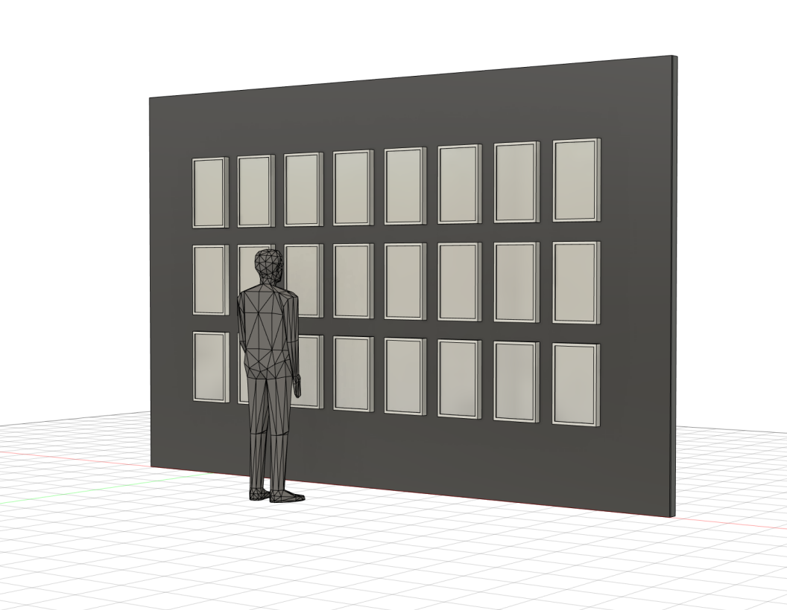
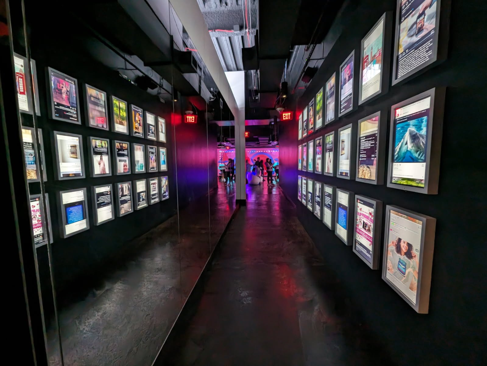
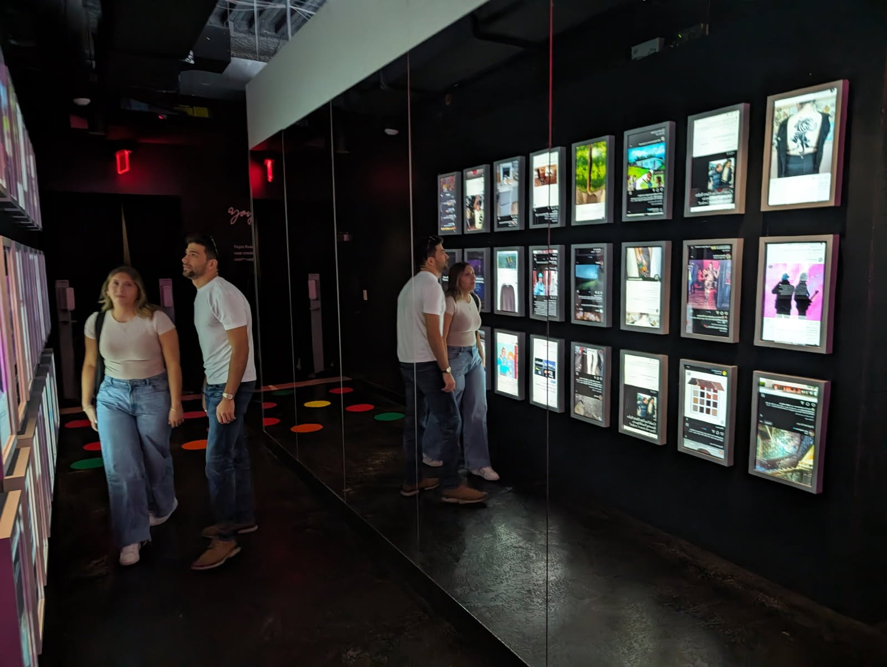

Selected Work
Insta-Nonsense is a commentary on and challenge to the role that social media plays in our lives and the effect that it has on how we view ourselves. How and why are you using social media? How does social media impact your day-to-day life?
This piece consists of an 8×8 grid of screens with two-way mirrors. The grid displays different looped Instagram feeds. When visitors walk in front of a screen, a sensor detects their presence and displays a statement on a black screen, revealing the reflective surface of the mirror. Each considered statement prompts reflection.



Rendering Credit: Steven Krejcik